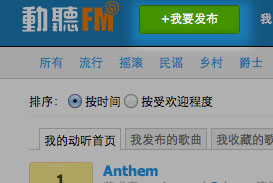
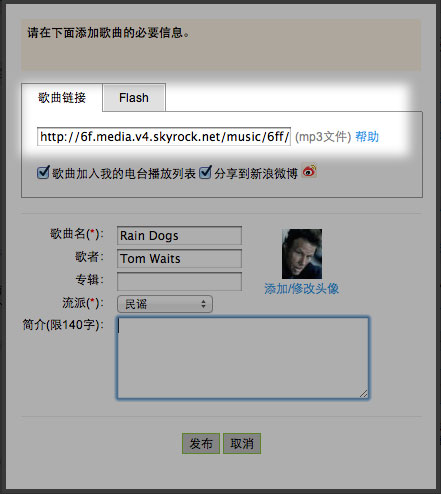
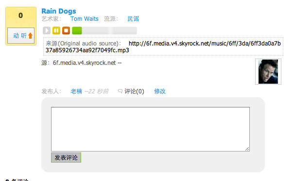

1、首先，找到一个可用的mp3链接(小经验，百度mp3里，如果后面没有“正版”的字样，直接点击歌曲标题，极有可能找到可用的链接，运气好的话，还比较流畅，但是切记，百度自己那个有zhangmenshiting.baidu.com字样的链接是不可用的)，当然，现在我用来做实验的这个链接是可用的：http://6f.media.v4.skyrock.net/music/6ff/3da/6ff3da0a7b37a85926734aa92f7049fc.mp3，点击动听FM里那个醒目得要死的“我要发布”的按钮。
2、点击“我要发布”之后，把刚才得到的链接粘贴到“歌曲链接”里去，再补充极少的信息，就可以发布了。
3、查看一下，成功了，也不是太复杂，对吧？如果你是用ipad访问，也是可以的。（画外音：哥，别老贴这种怪叔叔的歌了嘛，搞点悦耳的来听听）唉，这人长的怪了，尽是找一些怪叔叔听哪，原谅下，下回找几首小清新弄上来。。。
4、小总结：上面这两步不复杂，现在麻烦的是不好找可用并且持续的链接，像虾米和豆瓣的链接，看似可以，其实都是临时为了提供下载而生成的链接，很快就失效了。要找到相对可靠的链接，只有依赖你使用搜索引擎的技巧了。如果哪天解决了版权和服务器问题，我也想让大家简单一找立马是可用的文件，可以随意上传哪。。。